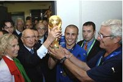

Футбол

Футбол — командный вид спорта, в
котором целью является забить мяч в
ворота соперника ногами или другими
частями тела (кроме рук) большее
количество раз, чем команда
соперника.
Есть 17 официальных правил игры,
каждое из которых содержит список оговорок и руководящих принципов. Эти
правила предназначены для применения на всех уровнях футбола, хотя есть некоторые изменения
для
таких
групп, как юниоры, взрослые, женщины и люди с ограниченными физическими возможностями.
Законы
очень часто формулировались в общих чертах, которые позволяют упростить их применения в
зависимости
от характера игры.